Auf den Internetseiten der BG ETEM (www.bgetem.de) sind weitere Praxishilfen und Informationen zu finden, z. B. ein Programm zur Gefährdungsbeurteilung speziell für Photovoltaikanlagen.
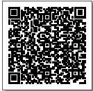
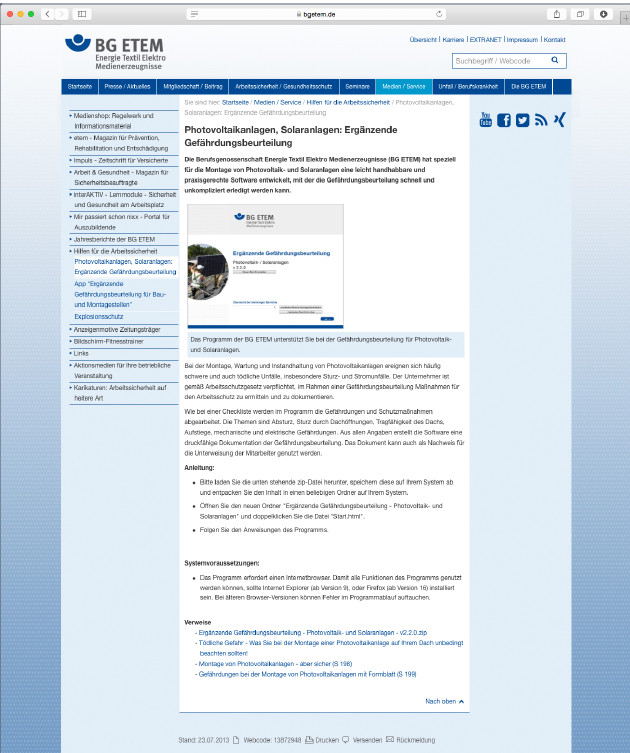
Abb. 29 Leicht handhabbare und praxisgerechte Software zur Gefährdungsbeurteilung (Webcode: 13872948 von www.bgetem.de)
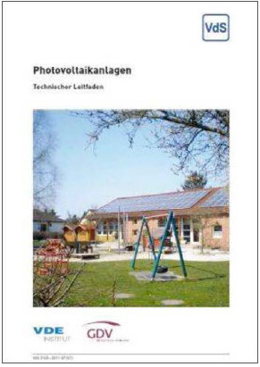
Abb. 30 VdS 3145 „Photovoltaikanlagen“
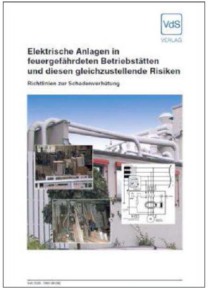
Abb. 31 VdS 2033 „Elektrische Anlagen in feuergefährdeten Betriebsstätten“
Das Übersteigen von einer Hubarbeitsbühne aus ist unter bestimmten Voraussetzungen möglich; hierzu gehören eine geeignete Bühne, qualifiziertes Personal, eine zugeschnittene Gefährungsbeurteilung, angepasste Unterweisungen und die nachfolgend genannten Maßnahmen:
Für das Verlassen der angehobenen Arbeitsbühne wird, unter Berücksichtigung der möglichen Absturz- und Quetschgefahren, eine spezielle Gefährdungsbeurteilung durchgeführt.
Die schriftliche Unterweisung der Beschäftigten beinhaltet die besonderen Aspekte des Verlassens der angehobenen Arbeitsbühne. Der Erhalt der schriftlichen Unterweisung wird durch Unterschrift des Unterwiesenen bestätigt.
Das Verlassen der angehobenen Arbeitsbühne und Übersteigen auf ein festes Bauteil ist in einer Betriebsanweisung geregelt.
Die Grundanforderungen für das sichere Betreiben von Hubarbeitsbühnen werden eingehalten.
Die eingesetzten Hubarbeitsbühnen verfügen über ausreichende Tragfähigkeit, Steifigkeit und Standsicherheit.
Es werden Arbeitsbühnen mit Tür verwendet.
Der vorgenannte Ausstieg wird benutzt, d.h. beim Verlassen der Arbeitsbühne erfolgt kein Übersteigen des Geländers.
Es werden nur Arbeitsbühnen verwendet, die den Ausstieg an der dem Überstiegsobjekt zugewandten Seite haben. Die Verwendung zusätzlicher, nicht zur Hubarbeitsbühne gehörender Auf- bzw. Überstiegshilfen wie z. B. Leitern ist unzulässig.
Besteht beim Verlassen der Arbeitsbühne Absturzgefahr, sichern sich die Beschäftigten vor dem Verlassen durch Persönliche Schutzausrüstung gegen Absturz (PSAgA) an geeigneten konstruktiven Anschlagpunkten außerhalb der Arbeitsbühne, die durch den Arbeitgeber festgelegt sind. Diese Anschlagpunkte sind von der Arbeitsbühne aus sicher erreichbar.
Anmerkung: geeignete Anschlagpunkte können z. B. Beton- oder Holzbalken, Träger oder Rohre von Stahlkonstruktionen sein.
Die Arbeitshöhe/Reichweite wird maximal zu 75 % ausgenutzt.
Ist der die Arbeitsbühne Verlassende der Bediener der Hubarbeitsbühne, ist ein zweiter Bediener vor Ort.
Eine Kommunikation zwischen dem Übersteigenden und dem zweiten Bediener vor Ort ist jederzeit sichergestellt.
Im Hinblick auf mögliche Quetschgefahren und Sachschäden werden ausreichende Abstände, die auch Effekte (Wippen, Peitscheneffekt) beim Verlassen der Arbeitsbühne berücksichtigen, zu festen Gegenständen der Umgebung eingehalten.
Es existiert ein Rettungskonzept.
siehe auch www.dguv.de
Webcode: d925593
www.bauforumplus.eu/absturz
PV-Module werden häufig auf Dächern mit brennbaren Baustoffen, wie z. B. Dämmstoffen, installiert. Brandschutztechnische Einrichtungen wie Rauch-Wärme- Abzug-Anlagen sind im Dachbereich angeordnet und können durch die PV-Module beeinträchtigt werden. Ebenfalls sind häufig Schutzeinrichtungen, wie z. B. Blitzschutzanlagen, vorhanden. Die PV-Module selbst stellen eine Brandlast dar und sie erzeugen bei Tageslicht trotz einer Abtrennung der Anlage vom Netz weiterhin eine Gleichspannung. Dadurch wird das Brandrisiko erhöht und die Brandbekämpfung erschwert. Die Installation einer PV-Anlage hat immer eine brandschutztechnische Auswirkung auf das Gebäude und ist deshalb bei der Anlagenplanung zu berücksichtigen.
Bei der Auswertung von Brandschäden in der Industrie, an Gewerbegebäuden und kommunalen Objekten zeigt sich, dass die Kombination von PV-Anlagen und brennbarer Dachdämmung zu Brandschäden mit Totalverlust der Gebäude führen kann. Hier stellt sich aktuell für den Sachversicherer die Frage nach der Versicherbarkeit solcher Objekte.
Voraussetzung für einen gefahrlosen Betrieb einer PVAnlage ist, dass die Anlagen fachgerecht installiert und die brandschutztechnischen Einrichtungen der Gebäude nicht beeinträchtigt werden. Besondere brandschutztechnische Anforderungen des Brandschutzkonzeptes sind zu berücksichtigen. Es kann erforderlich sein, die Freigabe der Baubehörde und die Zustimmung des Sachversicherers vor Baubeginn einzuholen. Daher muss sich jeder Errichter und Planer einer PV-Anlage mit dem Thema Brandschutz auseinandersetzen.
Neben den brandschutztechnischen Anforderungen der Landesbauordnungen und der Industriebaurichtlinie sind in vielen Bereichen weitergehende Auflagen zu beachten. So darf die nachträgliche Installation einer PV-Anlage auf dem Dach eines Industrieunternehmens nicht vom Brandschutzkonzept des Betriebes abweichen und den Brandschutz nicht beeinträchtigen.
Folgende Mängel werden bei brandschutztechnischen Überprüfungen häufig vorgefunden:
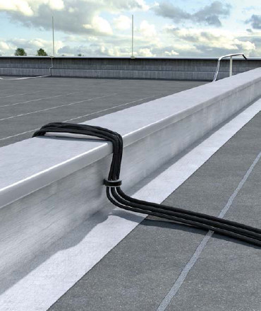 |
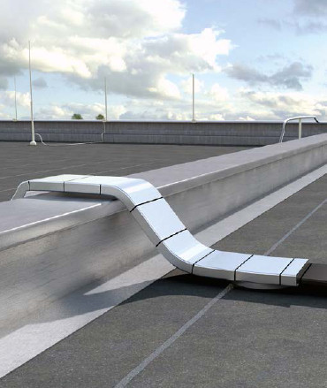 |
| Abb. 32 links ungeschützte, rechts geschützte Kabelführung über eine Brandwand | |
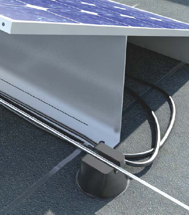 |
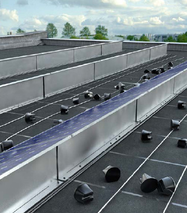 |
| Abb. 33 Überbaute und demontierte Blitzfangeinrichtungen | |
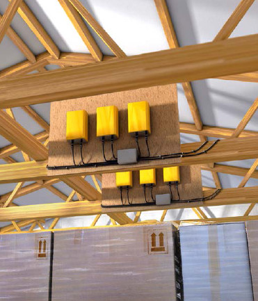 |
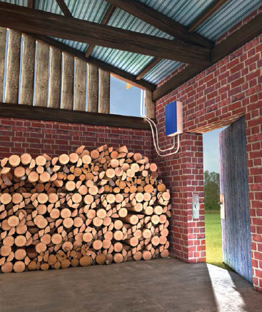 |
| Abb. 34 Unzulässige Montage in „feuergefährdeten Betriebsstätten“ | |
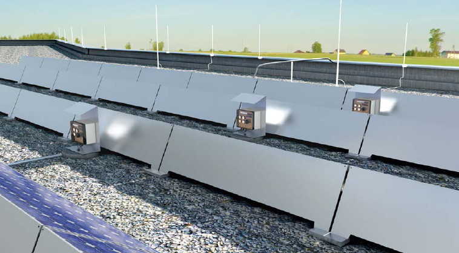
Abb. 35 Beispiel einer Blitzschutzanlage in Kombination mit einer PV-Anlage
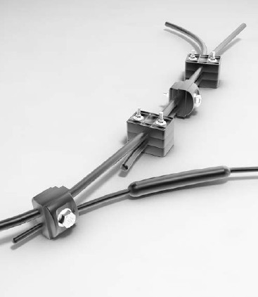 |
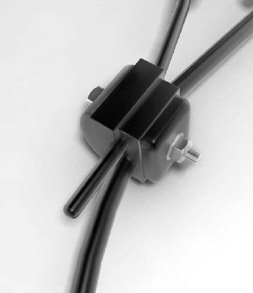 |
| Abb. 36 DC-Verbindungssystem, welches eine Verschaltung der Generatorseite ohne Abisolieren und Berührung der metallischen Leiter zulässt. Somit ist eine Verschaltung der Leitungen unter Spannung ohne Verwendung von PSA möglich. | |